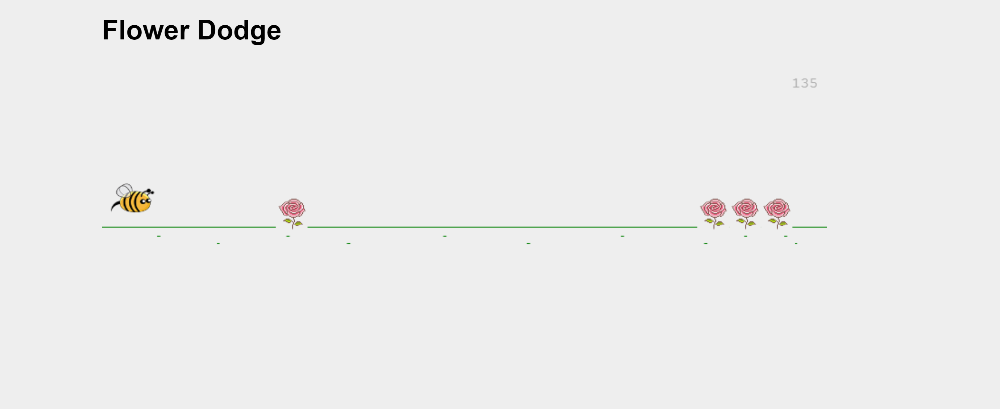

A browser-based endless runner inspired by the Chrome offline T-Rex game—reskinned with a floral theme. You control a flower that jumps to dodge bees. Created in the spring of 2018 for Rich Media Web App Development.
Built the game logic (collision detection, score, game states) and rendering using the Canvas API. Sourced and integrated custom sprites and sound effects for a cohesive theme. Implemented keyboard controls and a clear play-again flow for a smooth arcade-style experience.
Created in JavaScript using the Canvas API.
